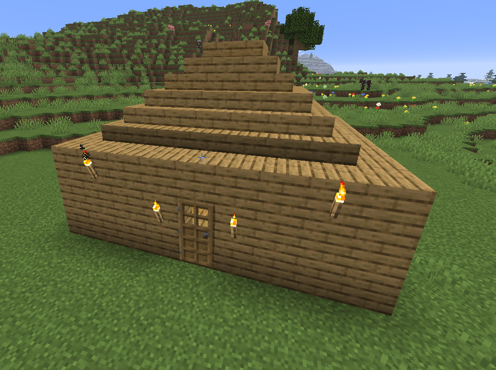
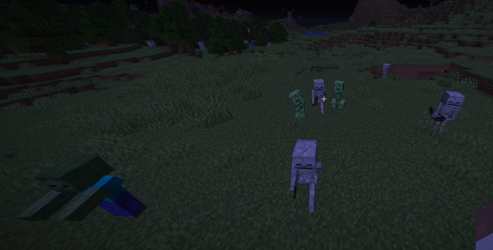

Minecraft: o jogo dos blocos
O que é o Minecraft?
Minecraft é um jogo de construção e sobrevivência em que tudo é feito de blocos. O mapa inteiro é quadrado, e é isso que dá ao jogo a cara que ele tem. Dá para passar horas construindo uma casa ou tentando sobreviver a primeira noite, que é quando os monstros começam a aparecer.
Eu jogo o jogo desde 2016 e o que mais gosto é a parte de construir e lutar com outros players. O jogo não tem um objetivo obrigatório: cada pessoa escolhe o que quer fazer, e é isso que deixa o Minecraft diferente da maioria dos jogos.

O que dá para fazer no jogo
Existem vários jeitos de jogar. Os dois mais comuns são construir e sobreviver, e geralmente quase todo mundo mistura os dois.
Construir
No modo criativo você tem todos os blocos disponíveis e não precisa se preocupar com vida nem com a fome. É o modo que eu uso quando quero testar uma ideia de construção sem perder material.
Sobreviver
No modo sobrevivência você começa sem nada, precisa quebrar as árvores, minerar pedra e cuidar da vida. É mais difícil, mas é o modo que dá mais emoção ao jogo.
Mobs que aparecem no mapa:
Os mobs são as criaturas do jogo. Cada tipo se comporta de um jeito, e saber disso ajuda muito na hora de montar um abrigo.
- Hostis: aparecem a noite ou em lugares escuros
- Creeper
- Zumbi
- Esqueleto
- Passivos: não atacam e servem de alimento
- Porco
- Galinha
- Vaca
- Neutros: só atacam se você atacar primeiro (ou olhar nos seus olhos)
- Enderman
- Lobo
- Aranha
- Domáveis: são amigáveis e podem virar companhia
- Gato
- Cavalo
- Papagaio

Como passar da primeira noite:
A primeira noite é a parte que mais assusta quem começa. Seguindo esta ordem, conseguimos passar dela sem morrer.
- Bata nas árvores com a mão e junte madeira.
- Faça uma bancada de trabalho e depois uma picareta de madeira.
- Minere pedra e carvão para fazer tochas e ferramentas melhores.
- Construa um abrigo fechado e coloque tochas dentro e em volta.
Participe do servidor
Toda semana abrimos um servidor de construção para jogar em equipe. As vagas são limitadas e o cadastro é feito pelo próprio site.